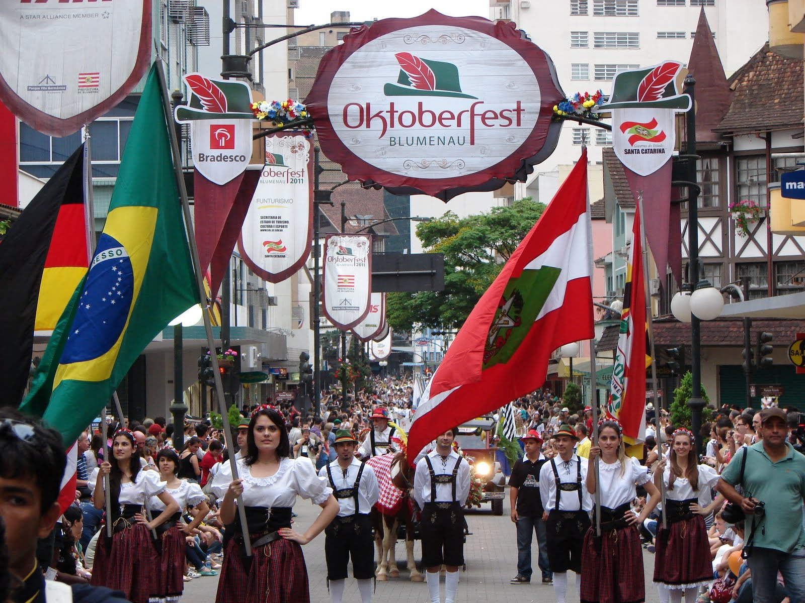
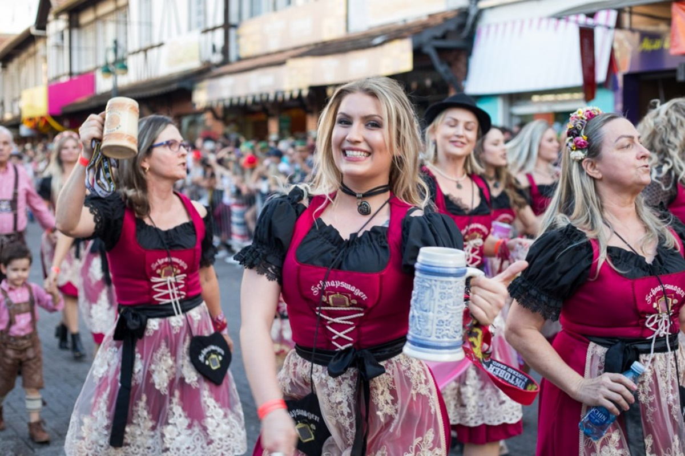

Blumenau é conhecida em todo o Brasil como uma das cidades com maior influência germânica em sua cultura e história. Fundada em 1850 pelo filósofo alemão Hermann Bruno Otto Blumenau, a cidade guarda fortes características européias, encantando visitantes do Brasil e exterior por sua arquitetura, gastronomia, natureza, indústrias, chope gelado e festas. Localizada estrategicamente próxima as importantes cidades do Mercosul e da estrutura portuária do Estado, é referência na educação, infraestrutura e mão de obra qualificada.
Com 165 anos, Blumenau destaca-se pela economia pujante, na preservação do meio ambiente e na força produtiva e empreendedora da cidade. O que não falta em Blumenau são sotaques diferentes, influência das várias etnias que ajudam a tornar a cultura da cidade rica na diversidade. Os trajes típicos e danças ainda fazem parte das manifestações culturais nos clubes de Caça e Tiro e festas típicas.Blumenau é o típico exemplo de município que conseguiu unir suas origens ao que o Brasil tem de melhor: o jeito de ser brasileiro.
A cidade é um excelente centro de compras, oferecendo produtos como cristais e artigos têxteis, reconhecidos nacionalmente e internacionalmente. Conhecida como cidade organizadora de grandes eventos e festas populares, com infra-estrutura profissional é sede do maior Centro de Eventos de Santa Catarina, o Parque Vila Germânica. Blumenau é, sem dúvida alguma, em cada atração que organiza, uma festa para os olhos.
 